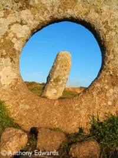
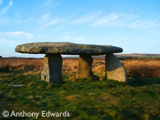
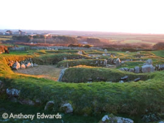
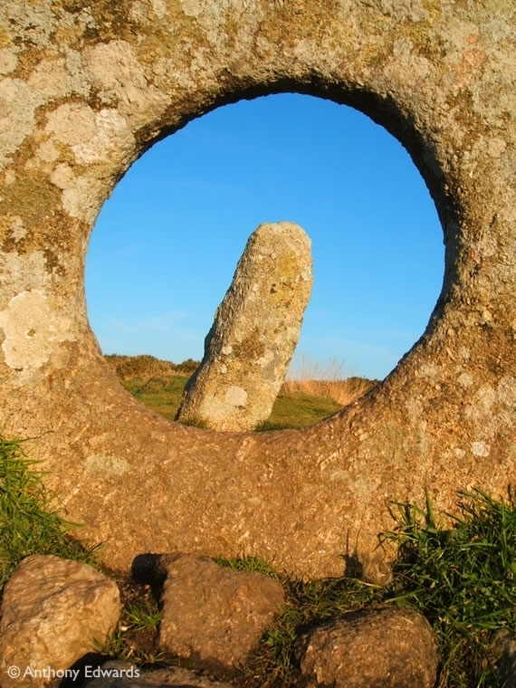

Ancient Monuments and History around Penzance
Penwith is littered with ancient monuments, stone circles, hill forts, standing stones and more. In fact, West Cornwall has one of the largest concentration of ancient sites in the entire of Europe, owed in large part to the landscape. West Cornwall's landscape has changes very little since the Bronze age 4500 years ago, resulting in the preservation of hundreds of monuments through the Iron age and into modern times.
Below is a small selection of the most popular monuments in the area and basic directions.
- Chysaster Ancient Village
This ancient village offers a glimpse into the Cornish Celtic life 2000 years ago. The site contains a villages with house lined streets. Each 'house' has a courtyard with several thatched living rooms, 8 of which survive to this day. Also has a Fougou. NW from Gulval off the B3311
- Trencrom Hill Fort
This Iron Age hill fort is situated roughly halfway between St. Ives and St. Michael's Mount, with both being visible from the summit. Has the remains of the fort, 2 stone huts an a well. Best visited at sunset for breathtaking views of both north and south sunsets. NE from Penzance off the B3311
- Merry Maidens
Circle of 19 standing stones, famed for its perfect circular formation. Signposted from the B3315.
- Men-a-tol
A holed stone, possibly part of a larger stone circle at some point. Just off the Penzance to Morvah road.
- Carn Euny
Ancient Village and Fougou, and possible the best example of both in the south west of England. Signposted from drift on the A30 out of Penzance
 Lanyon Quoit |
 Carn Euny |
 Men-a-tol |
|